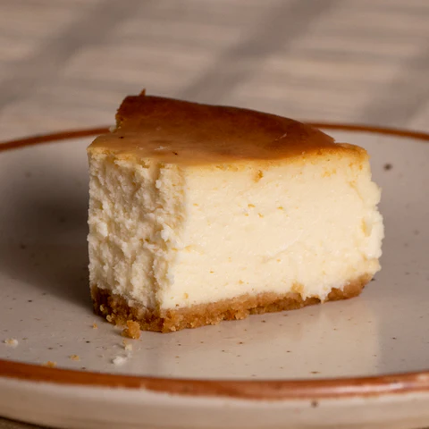

Back to Home Page
Cheesecake🥮
This cheesecake recipe is a New York Style Cheescake and is a typically baked Cheescake with crusty feels on the edges with creamy soft feeling on the inside....and is Eggless!

Ingredients
- Digestive Biscuits :- 5-6 biscuits
- Melted Butter :- 30 g
- Cream Cheese :- 230 g
- Fresh Cream (~25% Fat) :- 100 g
- Heavy Cream (~35% Fat) :- 70 g
- Condensed Milk :- 70 g
- Sugar :- 40 g
- Cornflour :- 10 g
- Lemon Juice - 15 g
Recipe Steps
- Preheat your oven to 170℃.
- We start with preparing our Sour Cream. This is what gives our cheesecake a more deepened tangy flavour along with the lemon juice. Sour cream is easily available in many countries, however in India its not available to buy directly. Therefore we use fresh cream to make our Sour Cream.
We take 100 g fresh cream (Amul cream) and mix it with 5 g lemon juice (about half a lemon) and vigorously shake both these together in a mason jar. This will be kept on your counter undisturbed for minimum of 15 min or till its needed again.
- Now, we first make the crust of the cheesecake. For that, crush 5-6 digestive biscuits in a food processor/grinder till they are evenly ground. Add melted butter to the crushed biscuits and mix properly. The mixture should not be too wet but should come together when pressed. This will form the bottom crust of the cheesecake.
- In a lined springform baking pan (lined both at the bottom and the sides), put the biscuit and butter mixture and press it down using a spatula or the bottom of a glass to form a tightly compacted crust at the bottom. Keep it aside.
- Take Cream Cheese in a bowl and whisk it up for just 15 sec. This is to loosen it up a bit. Add Sugar and whisk again for 30 secs. Do remember to use all ingredients from here on at room temperature!
- Next we add the condensed milk (milkmaid) to the bowl and mix again for 20-30 secs. We are not mixing too much at a time because we don't want to infuse air into the mixture. Also, apart from mixing with the electric mixer, also fold mixture and scrape the sides of the bowl using a spatula from time to time.
- Then goes in the Sour Cream and Heavy Cream, mixing after add each of them.
- Next, we put the cornflour and mix again, making sure no lumps remain at the end.
- Lastly, goes the lemon juice and mix for just 15 seconds. We do not mix the batter too much after putting the lemon juice in. The consistency of the batter would be on slightly on the thicker side, not free flowing.
- Pour the cheesecake mixture on top of the biscuit and butter crust that we had made earlier and tap it out thoroughly. We want the batter to even out in the pan and remove any air bubbles so formed during the mixing process.
- This cheesecake will be baked in a water bath. Because the baked cheesecake loves a medium hot & humid environment to be baked in. To create the water bath, we put the cake pan in a baking tray with some water in it. But before we put it in the water bath, we need to make sure that the cake pan is sealed properly and water will not seep inside the pan.
So you can place your cheesecake pan in another cake pan of similar/larger size which is then can be put on the tray with water in it.
- Bake the ensemble at 170℃ for 40 mins without opening the oven door even once. Then after 40 mins, switch the oven off and let it cool down inside the oven itself for 40 more mins. Please do not open the oven door even once.
- After 40 mins, take the cheesecake out of the oven. It's okay if it's still a bit wobbly at this point. Place the cheesecake on a wire rack and let it come to room temperature.
- After it reaches room temperature, refrigerate the cheesecake for 3-4 hrs or overnight before serving cold. Phew! I know, it takes a lot of time for us to enjoy this cheesecake even after its done baking, but trust me its worth all that wait.
The cheesecake stays in your refrigerator for 4-5 days easily. Enjoy!